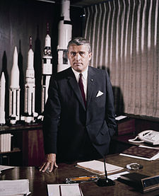

Кондратюк Юрій Васильович
Барон Ве́рнер Магнус Максиміліан фон Бра́ун (нім. Wernher Magnus Maximilian Freiherr von Braun; 23 березня 1912, Вірзіц, Пруссія — 16 червня 1977, Александрія, Вірджинія, США) — німецький та американський вчений, конструктор ракетно-космічної техніки. Головний конструктор ракети A-4 (Фау-2), ракети Сатурн V. «Батько» американської космічної програми.
Походить із прусської аристократичної родини. Його батько, Магнус фон Браун, юрист і політик право-консервативної орієнтації, був високопосадовим чиновником, найвищий його пост — райхсміністр харчування і сільського господарства 1932–1933 рр. Мати, Еммі фон Браун (нар. Квісторп) також походить з родини прусських консервативних політиків — її батько займав високу посаду при пруському королівському дворі та у місцевому ордені Йоганнітів. Молодий Браун тримає у руках модель Фау-2
Учасники операції Paperclip («Скріпка») з евакуації німецьких вчених і конструкторів з Німеччини до США. В. фон Браун 7-ий праворуч у 1-му ряду. Вернер з дитинства захоплювався космічною проблематикою. Навчався у Федеральній вищій технічній школі Цюриха, Берлінській вищій технічій школі і в Берлінському університеті. Був одним з членів німецького Товариства міжпланетних сполучень (Verein für Raumschiffahrt, VFR).
В 1930 році почав працювати над ракетами на рідкому паливі у Німецькій Державі. В 1932 році увійшов до військової ракетної наукової групи Вальтера Дорнбергера. В 1932–1933 роках на полігоні поблизу Кумерсдорфа здійснив запуск ракет на висоту 2000–2500 метрів.